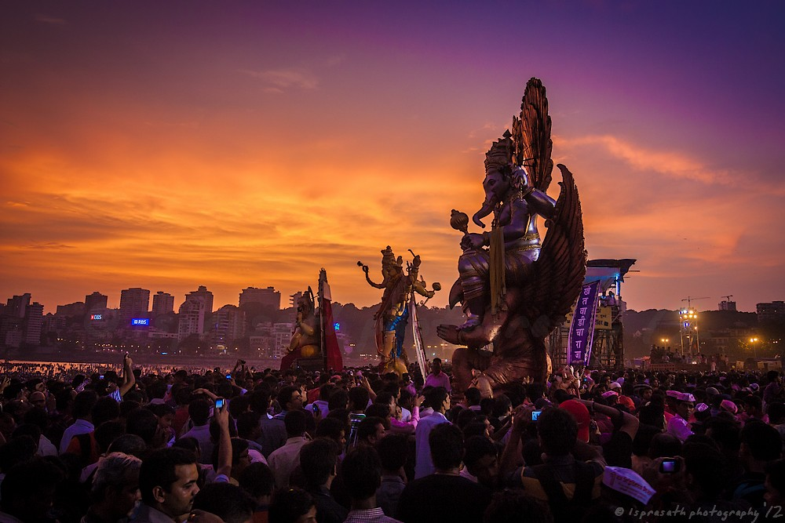
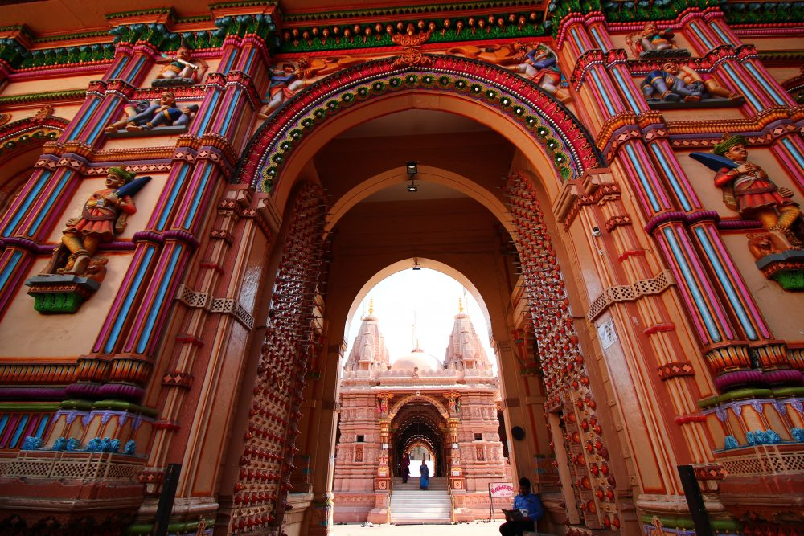
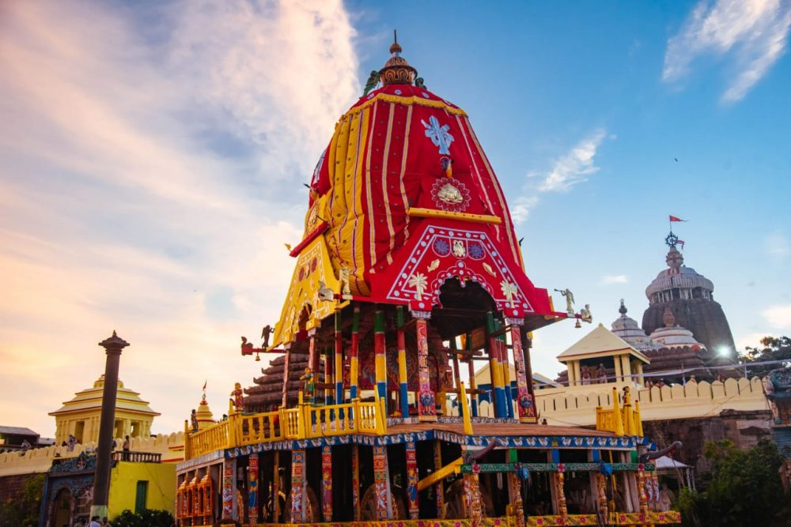
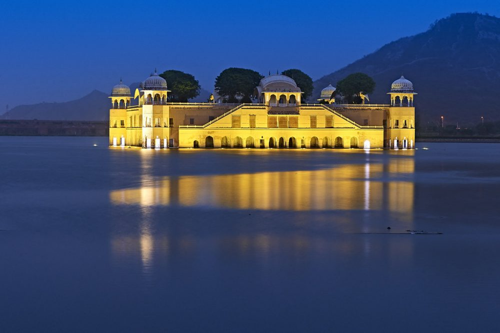
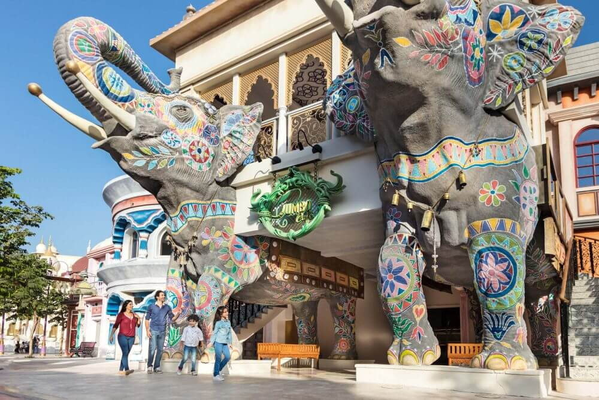
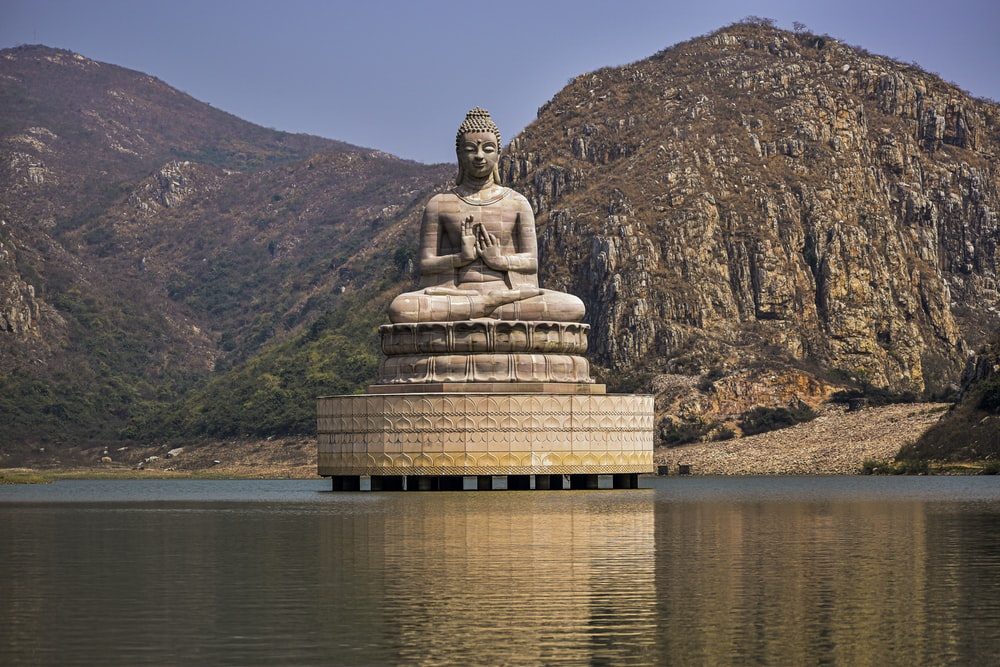

DARJELLING
Darjeeling (Bengali: [ˈdarˌdʒiliŋ], Nepali: [darˈd͡ziliŋ]) is a city and municipality in the Eastern Himalayas in India, lying at an elevation of 2,100 metres (7,000 ft) in the northernmost region of the state of West Bengal.[4] It is noted for its tea industry, scenic views of the world's third-highest mountain Kangchenjunga, and a narrow-gauge mountain railway, the Darjeeling Himalayan Railway, which is on the UNESCO World Heritage List. Darjeeling is the headquarters of the Darjeeling district which has a partially autonomous status called Gorkhaland Territorial Administration within the state of West Bengal. It is also a popular tourist destination in India.

AGRA
Agra (/ˈɑːɡrə/, Hindustani: [ˈaːgraː] (listen)) is a city on the banks of the Yamuna river in the Indian state of Uttar Pradesh, about 210 kilometres (130 mi) south of the national capital New Delhi and 335 km west of the state capital Lucknow. With a population of roughly 1.6 million, Agra is the fourth-most populous city in Uttar Pradesh and twenty-third most populous city in India.[11]

JAIPUR
Jaipur (/ˈdʒaɪpʊər/ (listen);[7][8][9] Hindi: Jayapura), formerly Jeypore, is the capital and largest city of the Indian state of Rajasthan. As of 2011, the city had a population of 3.1 million, making it the tenth most populous city in the country. Jaipur is also known as the Pink City, due to the dominant colour scheme of its buildings. It is also known as the Paris of India, and C. V. Raman called it the Island of Glory. It is located 268 km (167 miles) from the national capital New Delhi. Jaipur was founded in 1727 by the Kachhwaha Rajput ruler Jai Singh II,[10][11] the ruler of Amer, after whom the city is named.

KERALA
Kerala (English: /ˈkɛrələ/ KERR-ə-lə; Malayalam: [ke:ɾɐɭɐm] (listen)) is a state on the Malabar Coast of India.[13] It was formed on 1 November 1956, following the passage of the States Reorganisation Act, by combining Malayalam-speaking regions of the erstwhile regions of Cochin, Malabar, South Canara, and Travancore.[14][15] Spread over 38,863 km2 (15,005 sq mi), Kerala is the 21st largest Indian state by area. It is bordered by Karnataka to the north and northeast, Tamil Nadu to the east and south, and the Lakshadweep Sea[16] to the west. With 33 million inhabitants as per the 2011 census, Kerala is the 13th-largest Indian state by population. It is divided into 14 districts with the capital being Thiruvananthapuram. Malayalam is the most widely spoken language and is also the official language of the state.[17]

DELHI
Delhi (/ˈdɛli/; Hindi pronunciation: [ˈdɪlːiː] Dillī; Punjabi pronunciation: [ˈdɪlːiː] Dillī; Urdu pronunciation: [ˈdɛɦliː] Dêhlī),[17] officially the National Capital Territory (NCT) of Delhi, is a city and a union territory of India containing New Delhi, the capital of India.[18][19] Straddling the Yamuna river, primarily its western or right bank, Delhi shares borders with the state of Uttar Pradesh in the east and with the state of Haryana in the remaining directions. The NCT covers an area of 1,484 square kilometres (573 sq mi).[5] According to the 2011 census, Delhi's city proper population was over 11 million,[6][20] while the NCT's population was about 16.8 million.[7] Delhi's urban agglomeration, which includes the satellite cities of Ghaziabad, Faridabad, Gurgaon and Noida in an area known as the National Capital Region (NCR), has an estimated population of over 28 million, making it the largest metropolitan area in India and the second-largest in the world (after Tokyo).[8]

MUMBAI
Mumbai (English: /mʊmˈbaɪ/ (listen), Marathi: [ˈmumbəi]; also known as Bombay /bɒmˈbeɪ/— the official name until 1995) is the capital city of the Indian state of Maharashtra and the de facto financial centre of India. According to the United Nations, as of 2018, Mumbai is the second-most populous city in India after Delhi and the eighth-most populous city in the world with a population of roughly 2 crore (20 million).[18] As per the Indian government population census of 2011, Mumbai was the most populous city in India with an estimated city proper population of 1.25 crore (12.5 million) living under the Brihanmumbai Municipal Corporation.[19] Mumbai is the centre of the Mumbai Metropolitan Region, the sixth most populous metropolitan area in the world with a population of over 2.3 crore (23 million).[20] Mumbai lies on the Konkan coast on the west coast of India and has a deep natural harbour. In 2008, Mumbai was named an alpha world city.[21][22] It has the highest number of millionaires and billionaires among all cities in India.

AHMEDABAD
Ahmedabad (/ˈɑːmədəbæd, -bɑːd/; Gujarati: Amdavad [ˈəmdɑːʋɑːd] (listen)[14]) is the most populous city in the Indian state of Gujarat. It is the administrative headquarters of the Ahmedabad district and the seat of the Gujarat High Court. Ahmedabad's population of 8,253,000 (as per 2021 population-census) makes it the fifth-most populous city in India,[citation needed] and the encompassing urban agglomeration population estimated at 6,357,693 is the seventh-most populous in India. Ahmedabad is located near the banks of the Sabarmati River,[15] 25 km (16 mi)[16] from the capital of Gujarat, Gandhinagar, also known as its twin city.[17]

GUJARAT
Gujarat (/ˌɡʊdʒəˈrɑːt/, Gujarati: [ˈɡudʒəɾɑt] (listen)) is a state on the western coast of India with a coastline of about 1,600 km (990 mi) – longest in the country, most of which lies on the Kathiawar peninsula – and a population of 60.4 million. It is the fifth-largest Indian state by area and the ninth-largest state by population. Gujarat is bordered by Rajasthan to the northeast, Dadra and Nagar Haveli and Daman and Diu to the south, Maharashtra to the southeast, Madhya Pradesh to the east, and the Arabian Sea and the Pakistani province of Sindh to the west. Its capital city is Gandhinagar, while its largest city is Ahmedabad.[11] The Gujarati people of India are indigenous to the state and their language, Gujarati, is the state's official language. The economy of Gujarat is the fourth-largest in India, with a gross state domestic product (GSDP) of ₹19.44 trillion (US$260 billion)[12] and has the country's 10th-highest GSDP per capita of ₹243,761 (US$3,200).[13] Gujarat ranks 21st among Indian states in human development index.[14]

UDAIPUR
Udaipur (pronunciation (help·info)) (ISO 15919: Udayapura), historically named as Udayapura, is a city in the state of Rajasthan, India.[3][4] It is the historic capital of the kingdom of Mewar in the former Rajputana Agency. It was founded in 1559 by Udai Singh II of the Sisodia clan of Rajput,[5] when he shifted his capital from the city of Chittorgarh to Udaipur after Chittorgarh was besieged by Akbar. It remained as the capital city till 1818 when it became a British princely state,[5] and thereafter the Mewar province became a part of Rajasthan when India gained independence in 1947.[6]

UTTARAKHAND
Uttarakhand (English: /ˈʊtərɑːˌkʌnd/,[23] /ˌʊtərəˈkʌnd/[24] or /ˌʊtəˈrækənd/;[25] Hindi: ['ʊt̪ːərɑːkʰəɳɖ], lit. 'Northern Land'), also known as Uttaranchal (English: /ˈʊtəˈræntʃʌl/; the official name until 2007),[26] is a state in the northern part of India. It is often referred to as the "Devbhumi" (literally 'Land of the Gods')[27] due to its religious significance and numerous Hindu temples and pilgrimage centres found throughout the state. Uttarakhand is known for the natural environment of the Himalayas, the Bhabar and the Terai regions. It borders the Tibet Autonomous Region of China to the north; the Sudurpashchim Province of Nepal to the east; the Indian states of Uttar Pradesh to the south and Himachal Pradesh to the west and north-west. The state is divided into two divisions, Garhwal and Kumaon, with a total of 13 districts. The winter capital of Uttarakhand is Dehradun, the largest city of the state, which is a rail head. Gairsain, a town in Chamoli district, is the summer capital of Uttarakhand.[28][29][30] The High Court of the state is located in Nainital.

MADHYA PRADESH
Madhya Pradesh (/ˌmədjə prəˈdɛʃ/,[10] Hindi: [ˈməd̪ʱjə pɾəˈdeːʃ] (listen); meaning Central Province) is a state in central India. Its capital is Bhopal, and the largest city is Indore, with Jabalpur, Ujjain, Gwalior, Satna being the other major cities. Madhya Pradesh is the second largest Indian state by area and the fifth largest state by population with over 72 million residents. It borders the states of Uttar Pradesh to the northeast, Chhattisgarh to the southeast, Maharashtra to the south, Gujarat to the west, and Rajasthan to the northwest.[11]

KALKATA
Kolkata (English: /kɒlˈkɑːtə/[15] or /kɒlˈkʌtə/,[16] Bengali: [kolˈkata] (listen); also known as Calcutta /kælˈkʌtə/,[16] the official name until 2001) is the capital of the Indian state of West Bengal. Located on the eastern bank of the Hooghly River, the city is approximately 80 km (50 mi) west of the border with Bangladesh. It is the primary business, commercial, and financial hub of Eastern India and the main port of communication for North-East India.[17] According to the 2011 Indian census, Kolkata is the seventh-most populous city in India, with a population of 45 lakh (4.5 million) residents within the city limits, and a population of over 1.41 crore (14.1 million) residents in the Kolkata Metropolitan Area. It is the third-most populous metropolitan area in India. In 2021, Kolkata metropolitan area crossed 1.5 crore (15 million) registered voters. The Port of Kolkata is India's oldest operating port and its sole major riverine port. Kolkata is regarded as the Cultural Capital of India.[1][18]

WEST BENGAL
West Bengal (/bɛŋˈɡɔːl/, Bengali: Poshchim Bongo, pronounced [ˈpoʃtʃim ˈbɔŋɡo] (listen), abbr. WB) is a state in the eastern region of India along the Bay of Bengal. With over 91 million inhabitants, it is the fourth-most populous state and the thirteenth-largest state by area in India. Covering an area of 88,752 km2 (34,267 sq mi), it is also the eighth-most populous country subdivision of the world. Part of the Bengal region of the Indian subcontinent, it borders Bangladesh in the east, and Nepal and Bhutan in the north. It also borders the Indian states of Odisha, Jharkhand, Bihar, Sikkim and Assam. The state capital is Kolkata, the third-largest metropolis, and seventh largest city by population in India. West Bengal includes the Darjeeling Himalayan hill region, the Ganges delta, the Rarh region, the coastal Sundarbans and the Bay of Bengal. The state's main ethnic group are the Bengalis, with the Bengali Hindus forming the demographic majority.

UTTAR PRADESH
Uttar Pradesh (/ˌʊtər prəˈdɛʃ/;[12] Hindi: [ˈʊtːəɾ pɾəˈdeːʃ] (listen), lit. 'Northern Province') is a state in northern India, bordered by Nepal. With over 200 million inhabitants, it is the most populated state in India as well as the most populous country subdivision in the world.[13] It was established in 1950 after India had become a republic. It was a successor to the United Provinces (UP) during the period of the Dominion of India (1947–1950), which in turn was a successor to the United Provinces (UP) established in 1935, and eventually of the United Provinces of Agra and Oudh established in 1902 during the British Raj. The state is divided into 18 divisions and 75 districts, with the state capital being Lucknow, and Allahabad serving as the judicial capital. On 9 November 2000, a new state, Uttaranchal (now Uttarakhand), was created from Uttar Pradesh's western Himalayan hill region. The two major rivers of the state, the Ganges and its tributary Yamuna, meet at the Triveni Sangam in Allahabad, a Hindu pilgrimage site.

❮
❯
BIHAR
Bihar (/bɪˈhɑːr/; Hindi pronunciation: [bɪˈɦaːr] (listen)) is a state in eastern India. It is the third-largest state by population and twelfth-largest by territory, with an area of 94,163 km2 (36,357 sq mi). Bihar borders Uttar Pradesh to its west, Nepal to the north, the northern part of West Bengal to the east, and with Jharkhand to the south. The Bihar plain is split by the river Ganges, which flows from west to east.[11] Bihar is also the world's fourth-most populous subnational entity.[citation needed]